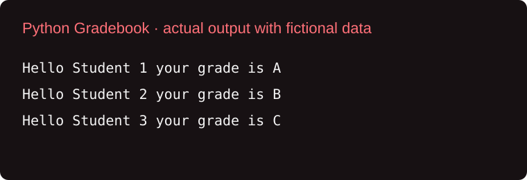
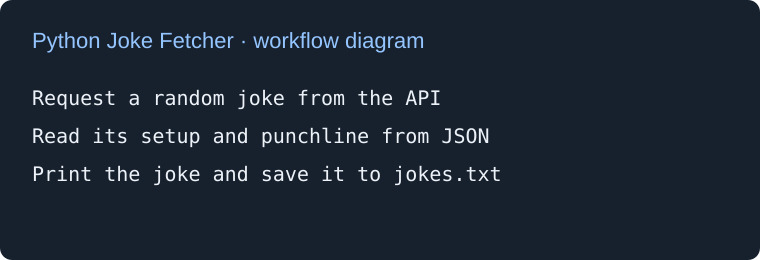

Projects
Small Python assignments that show what I’m learning.
Python · Coursework
Python Gradebook
A program that stores names and numerical grades, converts each grade into a letter grade, and prints a personalized message. It uses a function, conditional statements, nested lists, and a loop.

What I practiced
Functions, if/elif/else conditions, list indexing, and loops. The original list was named student while the loop used students; using the same name fixes the error.
Download the Python gradebookRun with python3 gradebook.py. No extra packages are required.
Python · API assignment
Random Joke Fetcher
A Python script that requests a random joke from the Official Joke API, prints its setup and punchline, and saves them to jokes.txt. It includes a timeout and handles request errors.

What I practiced
HTTP requests, reading JSON, writing text files, and handling network errors with try/except.
Download the joke fetcherInstall its dependency with python3 -m pip install requests, then run python3 joke_fetcher.py. Internet access is required. Each successful run replaces jokes.txt in the current folder.